Rank Correlations
The Rank Correlations command computes nonparametric alternatives to the parametric Pearson product-moment correlation coefficient – Spearman rank R ( or ), Kendall Tau and Gamma for all pairs of variables. These coefficients are usually used instead of Pearson correlation for variables measured on an ordinal scale, variables with a small number of observations or when it is not possible to assume that the variables follow a normal distribution.
How To
Run: Statistics→Nonparametric Statistics→ Rank Correlations.
Select the variables to correlate.
Select the Scatter Diagram option to produce a scatter plot for each pair.
Null hypothesis is defined as H0: . Optionally, define the alternative hypothesis H1:
o H1: – variables are negatively correlated.
o H1: 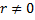
o H1: 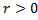
Pairwise deletion method is used for missing values removal.
Assumptions
Spearman correlation coefficient uses only the ranks of observations rather than the observations itself and therefore the assumptions of normality no longer apply (Di Fabio, 2012).
For Kendall Tau a variable should be measured on an ordinal or continuous scale and, similarly to Spearman R, there must be a monotonic relationship between variables.
Results
Spearman’s Rho, Kendall Tau, Gamma and Pearson R are calculated for each pair of the input variables. By interpreting the results we can either accept or reject null hypothesis H0 about a relationship between the variables.
Spearman's Rho – calculated as Pearson’s correlation coefficient on the ranks of the variables. It is less restrictive than the Pearson's r. Rho varies between -1 and +1. If the coefficient is positive, then both variables are increasing, while negative correlation signifies that as the rank of one variable increases, the rank of the other variable decreases; ranks of one variable do not covary with the ranks of the other variable when =0.
The formula for Spearman Rho is:
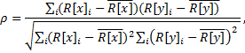
where and
are
the ranks for the variables  and
.
When ties are present, ranks are adjusted for ties using an average rank for
each tie group (Conover, 1999).
and
.
When ties are present, ranks are adjusted for ties using an average rank for
each tie group (Conover, 1999).
The formula is often written in terms of differences between paired ranks as:
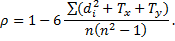
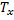 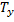 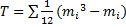
When ties are not present the equation can be written in a simpler way as:
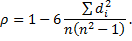
t – the value of the t-test statistic with , used to test the null hypothesis.
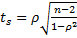
The null hypothesis states that there is no monotonic association between the two variables. The null hypothesis is rejected for a p‑value less than alpha (default value – 0.05) and it is concluded that the correlation is statistically significant.
Kendall Tau – is a Kendall correlation coefficient Tau-b, defined as:
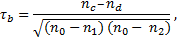
where nc is
the number of concordant pairs, nd – number of discordant
pairs or inversions (observations are arranged in opposite directions), and 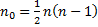 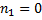 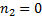 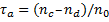 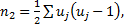 is
the number of ties in the ith group of tied values for the
first variable, and is
the number of ties in the jth group of tied values for the second
variable. Tau approaches a normal distribution more rapidly than Spearman’s
Rho, as the sample size increases and is more accurate when ties are present (Gilpin, 1993).
Tau also varies between -1 and +1.
is
the number of ties in the ith group of tied values for the
first variable, and is
the number of ties in the jth group of tied values for the second
variable. Tau approaches a normal distribution more rapidly than Spearman’s
Rho, as the sample size increases and is more accurate when ties are present (Gilpin, 1993).
Tau also varies between -1 and +1.
Kendall Tau represents the degree of concordance between ranks of two variables. The greater the number of discordant pairs (inversions), the smaller the coefficient is.
Inversions Count or D – the total number of inversions nd. Inversion is a pair of elements i and j such that i > j and rank of X(i) < Y(j).
To test the null hypothesis of independence τ is transformed into a Z-score . When sample size is larger than 10 the z-score approximately follows normal distribution and is used to compute the p‑value.
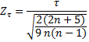
Gamma statistic – a symmetrical measure of association between two ordinal variables. Gamma (Г) is basically equivalent to the basic Kendall Tau, except that all ties are excluded from its computation and thus it is preferable to the Kendall Tau-a (no ties correction) when there are many tied observations (Goodman, Kruskal, 1963). Gamma values range from -1 (negative association) to +1 (positive association). Also known as a Goodman and Kruskal's Gamma.
Pearson correlation coefficient R illustrates strength and direction of the linear relationship between two variables. The Pearson R is parametric and should be taken in consideration only for continuous‑level variables that follow at least a near normal distribution.
References
Conover, W. J. (1999), Practical Nonparametric Statistics, Third Edition, New York: John Wiley & Sons.
Di Fabio, Richard P. Essentials of Rehabilitation Research: A Statistical Guide to Clinical Practice Philadelphia: F.A. Davis Co.; 2012, 384 p.
Gilpin, A. R. (1993). Table for conversion of Kendall's Tau to Spearman's Rho within the context measures of magnitude of effect for meta-analysis. Educational and Psychological Measurement, 53(1), 87-92.
Goodman L. A., Kruskal W.H., Measures of association for cross-classifications III: Approximate sampling theory, J. Amer. Statistical Assoc. 58, 1963, pp. 310-364.
Marsh, H. W. Pairwise deletion for missing data in structural equation models: Nonpositive definite matrices, parameter estimates, goodness of fit, and adjusted sample sizes. Structural Equation Modeling: A Multidisciplinary Journal, vol. 5, pp. 22-36, 1998.